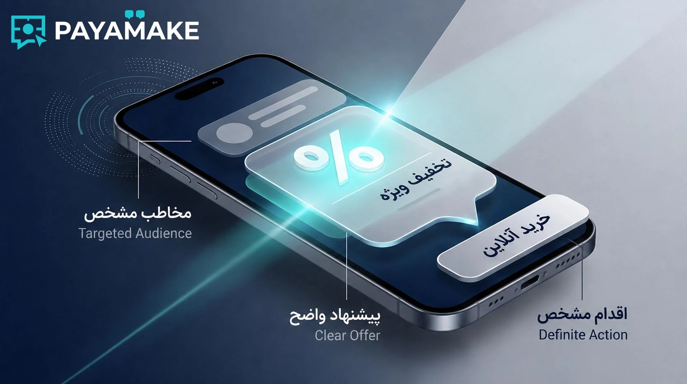
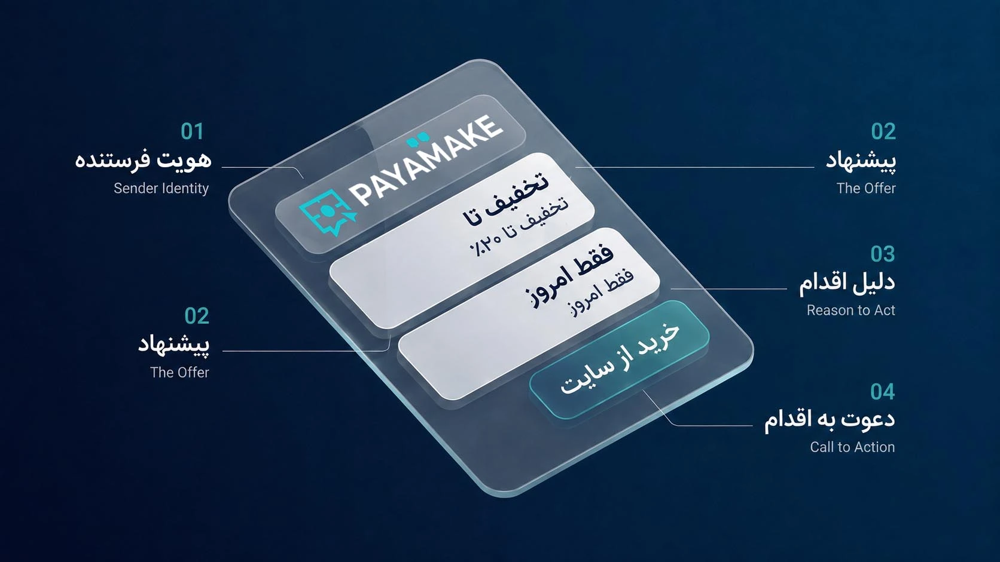
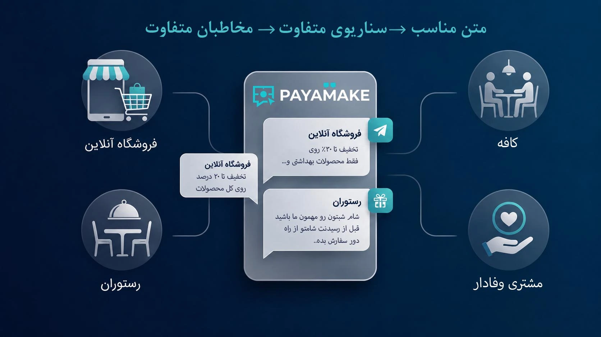
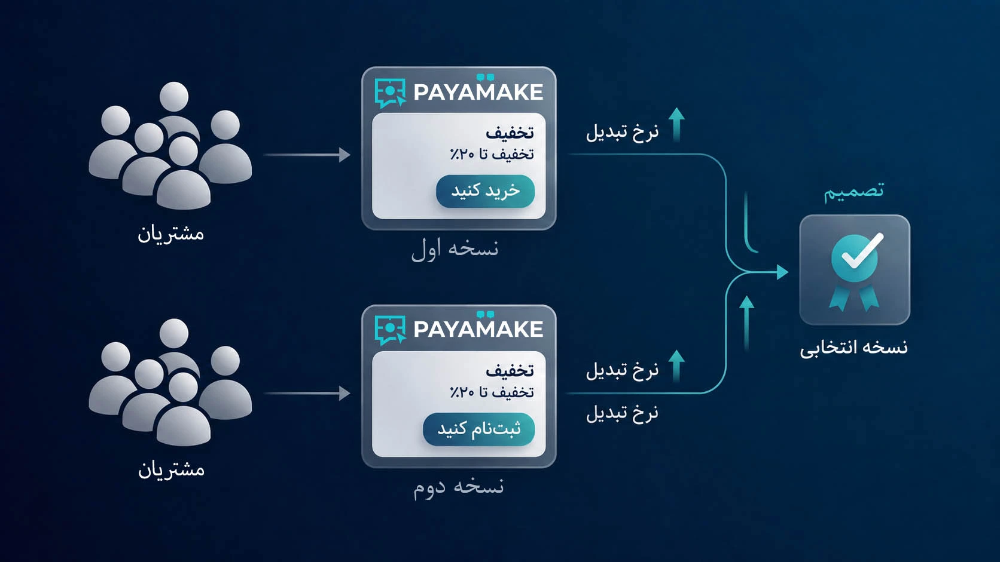

وقتی صحبت از پیامک تبلیغاتی میشود، خیلیها تصور میکنند کافی است یک پیشنهاد تخفیف را در چند خط بنویسند و برای تعداد زیادی شماره ارسال کنند. اما تفاوت بین یک پیامک معمولی و یک پیامک بازاریابی مؤثر، فقط در کلمات نیست؛ در این است که پیام برای چه کسی، با چه پیشنهادی و با چه هدفی نوشته شده باشد.
مخاطب پیامک معمولاً فرصت زیادی برای خواندن ندارد. بنابراین متن باید سریع قابل فهم باشد و مخاطب در همان چند ثانیه اول متوجه شود این پیام از طرف چه کسبوکاری است، چه چیزی به او پیشنهاد میشود و اگر علاقهمند بود باید چه کاری انجام دهد.
یک پیامک تبلیغاتی خوب چه ویژگیهایی دارد؟
یک متن خوب الزاماً طولانی یا ادبی نیست. در واقع، در تبلیغات پیامکی معمولاً وضوح از پیچیدگی مهمتر است. مخاطب باید بتواند پیام را سریع بخواند و بدون حدس زدن بفهمد چرا این پیام برای او ارسال شده است.
یک پیامک حرفهای معمولاً چند ویژگی دارد: مخاطب آن مشخص است، پیشنهاد ارزش مشخصی دارد، نام کسبوکار یا فرستنده قابل تشخیص است، متن روی یک موضوع متمرکز است و در پایان مسیر اقدام مشخصی وجود دارد.

قبل از نوشتن، مخاطب را مشخص کنید
یکی از رایجترین اشتباهات در نوشتن متن پیامک تبلیغاتی این است که ابتدا متن نوشته شود و بعد تصمیم بگیریم این پیام برای چه کسی مناسب است. مسیر بهتر برعکس است.
ابتدا باید مشخص کنید مخاطب شما چه کسی است. مشتری قدیمی است یا مخاطب جدید؟ یک کسبوکار محلی است یا مخاطب سراسر کشور؟ به دنبال تخفیف است یا خدمات تخصصی؟ قرار است خرید کند، تماس بگیرد، رزرو کند یا فقط اطلاعات بیشتری دریافت کند؟
هرچه پاسخ این سؤالها دقیقتر باشد، نوشتن پیام هم سادهتر میشود. وقتی بدانید برای چه کسی حرف میزنید، لازم نیست در یک پیام کوتاه همه چیز را توضیح دهید.
این موضوع با بازاریابی پیامکی هدفمند ارتباط مستقیم دارد. هدفمند بودن فقط به انتخاب بانک شماره محدود نمیشود؛ متن هم باید با همان مخاطب هماهنگ باشد.
پیشنهاد پیامک را واضح کنید
مخاطب باید خیلی سریع بفهمد چه چیزی دریافت میکند. اگر پیشنهاد اصلی در میان چند جمله تبلیغاتی گم شود، احتمال دارد پیام بدون اقدام خاصی کنار گذاشته شود.
پیشنهاد میتواند تخفیف، قیمت ویژه، امکان مشاوره، رزرو سریع، محصول جدید، خدمت جدید، ارسال رایگان یا یک مزیت مشخص دیگر باشد. مهم این است که ارزش پیشنهادی قابل فهم باشد.
بد به جای خوب
عبارتهایی مثل «یک فرصت فوقالعاده برای شما داریم» بهتنهایی اطلاعات زیادی به مخاطب نمیدهند. مخاطب باید بداند فرصت دقیقاً چیست.
بهتر
«۲۰٪ تخفیف خرید اول فروشگاه X تا پایان امروز» از نظر ارتباطی روشنتر است، چون پیشنهاد، میزان تخفیف و محدودیت زمانی را مشخص میکند.
ساختار یک پیامک تبلیغاتی حرفهای
لازم نیست برای هر کمپین از یک فرمول خشک استفاده کنید، اما داشتن یک ساختار ذهنی ثابت کمک میکند متنها منظمتر شوند.
هویت فرستنده
مخاطب باید بداند پیام از طرف چه کسبوکاری ارسال شده است.
پیشنهاد
در یک جمله کوتاه بگویید چه ارزش یا پیشنهادی برای مخاطب دارید.
دلیل اقدام
اگر محدودیت زمانی، ظرفیت محدود یا مزیت مشخصی وجود دارد، آن را روشن بیان کنید.
دعوت به اقدام
مشخص کنید مخاطب بعد از خواندن پیام باید چه کاری انجام دهد.

فرمول ساده برای نوشتن متن پیامک
اگر برای شروع نوشتن متن دچار مشکل میشوید، میتوانید از یک الگوی ساده استفاده کنید:
نام کسبوکار + پیشنهاد مشخص + مزیت یا محدودیت + دعوت به اقدام
برای مثال، یک فروشگاه میتواند پیام خود را اینطور طراحی کند:
«فروشگاه X | ۲۰٪ تخفیف خرید اول برای مشتریان جدید. تا پایان امروز. برای دریافت تخفیف وارد لینک شوید.»
این الگو قانون قطعی نیست؛ هدف آن این است که هنگام نوشتن بدانید چه اطلاعاتی نباید از پیام حذف شود.
یک پیام، یک هدف
یکی دیگر از نکات مهم این است که یک پیامک را با چند هدف مختلف شلوغ نکنید. اگر هدف اصلی فروش است، پیام نباید همزمان مخاطب را به تماس، عضویت، دنبال کردن شبکه اجتماعی و چند اقدام دیگر دعوت کند.
هرچه مسیر اقدام واضحتر باشد، تحلیل نتیجه کمپین نیز سادهتر خواهد بود.
دعوت به اقدام را درست بنویسید
یکی از مهمترین بخشهای متن پیامک دعوت به اقدام یا CTA است. مخاطب باید بداند بعد از خواندن پیام چه کاری انجام دهد.
عبارتهایی مانند «مشاهده کنید»، «رزرو کنید»، «تماس بگیرید»، «ثبتنام کنید»، «کد تخفیف را دریافت کنید» یا «برای مشاوره پیام دهید» زمانی مفید هستند که با هدف واقعی کمپین هماهنگ باشند.
دعوت به اقدام نباید مبهم باشد. اگر مخاطب نمیداند قدم بعدی چیست، حتی یک پیشنهاد خوب هم ممکن است نتیجه مورد انتظار را ایجاد نکند.

نمونه متن پیامک تبلیغاتی برای چند کسبوکار
متن پیامک باید با نوع کسبوکار و سناریوی مخاطب هماهنگ شود. چند نمونه زیر صرفاً برای نشان دادن منطق نوشتن هستند و نباید بدون تغییر برای همه کمپینها استفاده شوند.
فروشگاه اینترنتی
«فروشگاه X | تخفیف ویژه خرید اول فعال شد. ۲۰٪ تخفیف تا پایان امروز. مشاهده پیشنهاد: example.ir»
رستوران
«رستوران X | امروز برای ناهار یک پیشنهاد ویژه داریم. ارسال رایگان سفارشهای محدوده تا ساعت ۱۴. سفارش: example.ir»
خدمات تخصصی
«مجموعه X | برای دریافت مشاوره اولیه خدمات X، ظرفیت این هفته محدود است. برای هماهنگی با ما تماس بگیرید.»
بازگشت مشتری
«مشتری عزیز X | مدت زیادی از آخرین خرید شما گذشته. برای خرید بعدی ۱۵٪ تخفیف ویژه شما فعال شده است. کد: RETURN15»
اشتباهات رایج در نوشتن پیامک تبلیغاتی
پیامک جای توضیح کامل محصول نیست. اطلاعات اصلی را منتقل کنید و در صورت نیاز مخاطب را به صفحه مقصد هدایت کنید.
اگر مخاطب بعد از خواندن پیام هنوز نمیداند چه چیزی به او پیشنهاد شده، متن نیاز به بازنویسی دارد.
مخاطب باید بداند بعد از خواندن پیام چه کاری انجام دهد.
وعدههایی که در صفحه مقصد یا هنگام تماس قابل ارائه نیستند، میتوانند اعتماد مخاطب را کاهش دهند.
یک پیام عمومی همیشه برای تمام گروههای مخاطب مناسب نیست. در صورت امکان، متن را با سناریوی هر گروه هماهنگ کنید.
پیامک نباید فقط بگوید «بخر». باید روشن کند چرا این پیشنهاد برای مخاطب ارزشمند است.
چطور متن پیامک را آزمایش کنیم؟
حتی اگر فکر میکنید یک متن بسیار خوب نوشتهاید، نتیجه واقعی کمپین از حدس شما مهمتر است. به همین دلیل بهتر است متن را نیز مانند زمان ارسال، قابل آزمایش در نظر بگیرید.
اگر جامعه مخاطب اجازه میدهد، دو گروه مشابه ایجاد کنید و یک متغیر مشخص را تغییر دهید. برای مثال میتوانید متن دعوت به اقدام را تغییر دهید و سایر بخشهای کمپین را ثابت نگه دارید.
یک هدف مشخص کنید
مثلاً فروش، تماس، رزرو یا دریافت لید.
دو نسخه بسازید
دو متن متفاوت اما با پیشنهاد یکسان آماده کنید.
فقط یک متغیر را تغییر دهید
مثلاً فقط CTA یا نحوه بیان پیشنهاد را تغییر دهید.
نتیجه را ثبت کنید
تماس، پاسخ، کلیک، فروش یا هر شاخصی که از ابتدا تعیین کردهاید بررسی شود.
نسخه بهتر را برای کمپین بعدی استفاده کنید
هر کمپین باید اطلاعاتی برای تصمیم بهتر در ارسال بعدی ایجاد کند.

چکلیست نهایی نوشتن متن پیامک تبلیغاتی
- مخاطب پیام را مشخص کردهام.
- هدف کمپین را میدانم.
- پیشنهاد اصلی در پیام واضح است.
- نام کسبوکار یا فرستنده مشخص است.
- متن را تا حد ممکن کوتاه و قابل فهم نوشتهام.
- پیام فقط روی یک هدف اصلی تمرکز دارد.
- دعوت به اقدام واضح است.
- وعدهای که در پیام دادهام واقعاً قابل ارائه است.
- صفحه مقصد یا مسیر اقدام با متن پیام هماهنگ است.
- در صورت امکان، نسخههای مختلف متن را آزمایش میکنم.
- نتیجه کمپین را ثبت و برای ارسال بعدی استفاده میکنم.
جمعبندی
نوشتن یک پیامک تبلیغاتی مؤثر بیشتر از آنکه به استفاده از کلمات پیچیده یا جملات تبلیغاتی وابسته باشد، به شناخت مخاطب و وضوح پیشنهاد بستگی دارد. مخاطب باید سریع متوجه شود پیام از طرف چه کسی است، چه پیشنهادی دریافت کرده و قدم بعدی چیست.
اگر ارسال پیامک انبوه را بدون شناخت مخاطب و بدون سناریوی مشخص انجام دهید، حتی یک متن بسیار خوب هم ممکن است نتیجه مطلوبی نداشته باشد. در مقابل، وقتی متن با مخاطب، پیشنهاد و هدف کمپین هماهنگ شود، پیامک میتواند بخشی قابل اندازهگیری از فرآیند بازاریابی باشد.
برای همین بهتر است متن پیامک را یک عنصر ثابت و غیرقابل تغییر در نظر نگیرید. آن را مانند زمان ارسال، گروه مخاطب و پیشنهاد کمپین آزمایش کنید و از نتیجه هر ارسال برای بهتر کردن کمپین بعدی استفاده کنید.